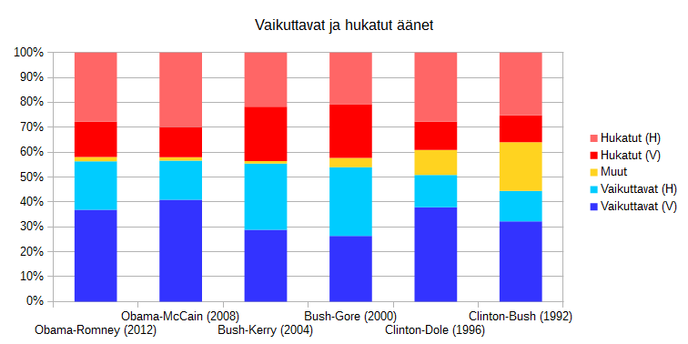

Al Gore tuskin lukeutuu Yhdysvaltojen nykyisen vaalitavan suurimpiin faneihin. Kuva: Wikimedia Commons
Yhdysvaltojen presidentinvaalien tulosta ei tiedä vielä kukaan, mutta yksi asia on varmaa. Valtava osa maailman vaikutusvaltaisimman henkilön vaalin äänistä menee hukkaan.
Tätä voi käyttää helppona esimerkkinä siitä, miten matematiikka voi tehdä maailmasta hyvin erilaisen.
Yhdysvaltojen presidentinvaaleissa on käytössä vaalijärjestelmä, jossa 538 valisijamiestä (Electoral College) valitsee presidentin. Nämä valitsijamiehet puolestaan valitaan osavaltioissa. Osavaltion valitsijamiesten määrä on senaattorien määrä + kongressiedustajien määrä.
Lähes kaikissa osavaltioissa osavaltion kaikki valitsijamiehet menevät osavaltiossa enemmistön saaneen puolueen ehdokkaalle. Ainoat poikkeukset ovat Maine ja Nebraska, joissa on hieman poikkeavat järjestelyt. Väkirikkaimmalla osavaltiolla (Kalifornia) on 55 valitsijamiestä, kun pienimmillä osavaltioilla ja Washington D.C.‘llä on vain 3 valitsijamiestä.

Osavaltioiden valitsijamiehin lukumäärät vuosien 2012 - 2020 presidentinvaalissa. kuva: wikimedia commons
Presidentiksi valitaan ehdokas, joka saa ehdottoman enemmistön valitsijamiesten äänistä (Electoral Votes). Tällaiseen vaalijärjestelmään on kaiketi päädytty, koska osavaltioita pidetään itsenäisinä valtioina ja uusintavaalien järjestämistä, jos ehdotonta enemmistöä ei saavuteta, pidetään kohtuuttoman vaikeana.
Mihin informaatio hukkuu?
Osavaltioissa on siis etukäteen määritelty määrä valitsijamiehiä, jotka osavaltion voittanut ehdokas haalii itselleen. Aluksi ääniä laskemalla muodostetaan numeerinen muuttuja Äänimäärä, jonka avulla muodostetaan luokittelumuuttuja Vaalivoittaja/Häviäjä. Tämän jälkeen määritellään ratkaiseva numeerinen muuttuja Valtsijamiesten määrä. Tässä prosessissa hävitetään merkittävä määrä alkuperäistä äänestysinformaatiota.
Esimerkiksi vuonna 2000 Floridassa ehdokkaat saivat ääniä seuraavasti: Bush 2912790, Gore 2912253 ja muut yhteensä 138067. Tällä 537 äänen voitolla Bush sai kaikki Floridan 25 valitsijamiestä. Voisi kuvitella, että puolet floridalaisista äänestäjistä eivät olleet kovin tyytyväisiä.
Esimerkki on tietysti karkeimmasta päästä, mutta vuodesta 1992 alkaen kaikissa vaaleissa on mennyt yli 40% annetuista äänistä ns. hukkaan. Hukkaan menolla tarkoitetaan tässä sitä, että annetulla äänellä ei ollut merkitystä lopullisessa presidentin valinnassa.

Punaisella on merkitty voittajan (V) ja häviäjän (H) äänistä hukkaan menneet osuudet eri vuosina.
Hukkaan menneet äänet koostuvat voittajan, häviäjän ja muiden ehdokkaiden* äänistä. Muille ehdokkaille annetut äänet menevät automaattisesti hukkaan, jos ajatellaan vain presidentin valintaa.
Esimerkiksi Ross Perot sai noin 10 prosenttia äänistä molemilla kerroilla ollessaan ehdolla ja Ralph Nader vastaavasti noin 3 prosenttia. Äänimenetykset oletettavasti vaikuttivat kyseisten vaalien tuloksiin, mutta kummallakaan ehdokkaalla ei ollut minkäänlaisia mahdollisuuksia tulla valituksi. Jos vaalissa ei ole kansallisella tasolla merkittäviä kolmansia ehdokkaita, niin nämä äänimäärämenetykset ovat noin prosentin luokkaa.
Oleellisemmat menetykset syntyvät pääehdokkaiden saamista äänistä hävityissä osavaltioissa. Voittaja on menettänyt keskimäärin 15 prosenttia kannatuksestaan ja häviäjä vastaavasti keskimäärin 25 prosenttia kannatuksestaan hävityissä osavaltioissa. Jos presidentti valittaisiin suoralla kansanvaalilla tai osavaltiot jakaisivat valitsijamiehet saadun kannatuksen mukaan, tällaisia menetyksiä ei syntyisi.
Olisivatko tulokset muuttuneet?
Tarkasteltaessa vuoden 1960 jälkeisiä vaaleja vain yhden kerran olisi suoralla kansanvaalilla ”tullut valituksi” eri presidentti. Tämä vaatii tietysti reilusti mutkien oikomista, kun käytetään spekulatiivisessa vaalitavassa nykyisellä vaalijärjestelmällä laskettuja ääniä. Lisäksi oletetaan, että enemmän ääniä saanut valitaan huomioimatta ns. muiden ehdokkaiden ääniä.
Jos nämä oletukset kuitenkin tehdään, olisi Al Gore voittanut George W. Bushin puolen miljoonan äänen marginaalilla. USA:n presidentinvaaleissa 2000 annettiin hieman yli sata miljoonaa ääntä, joista muut ehdokkaat saivat hieman yli 3 miljoonaa ääntä.
Jos valitsijamiehet olisi tuolloin valittu osavaltioittaisissa suhteutettuna äänimääriin, niin Bush olisi saanut 261 valitsijamiestä, kun Gore olisi saanut vain 260. Loput 17 valitsijamiestä olisivat menneet muille ehdokkaille (lähinnä Ralph Naderille). Kaikki vuoden 1960 jälkeiset vaalit olisivat olleet huomattavasti tiukempia, jos olisi käytetty jompaa kumpaa yllä mainituista vaalitavoista. Näissä neljässätoista presidentinvaalissa viidesti voittajan ääniosuus on ollut alle 50%.

Ehdokkaiden saamat ääniosuudet vaaleissa. Värit eivät viittaa republikaaneihin ja demokraatteihin, vaan voittaneisiin ja hävinneisiin ehdokkaisiin. EV tarkoittaa Electoral Votes -määrää.
Mikä muuttuisi, jos vaalijärjestelmää muutettaisiin?
Suora vaikutus vaalitavan muutoksessa olisi, että annetut äänet tällaisessa henkilövaalissa eivät menisi hukkaan.
Mutta vielä suurempi merkitys olisi sillä, että jomman kumman pääpuolueen hallitsemissa osavaltiossa toisen pääpuolueen ehdokasta kannattaisi käydä äänestämässä. Voisi kuvitella, että moni äänestäjä lähtisi varmemmin vaaliuurnille, kun tietäisi, että oma ääni ei mene hukkaan.
Tällöin myös niin sanotut ”Swing States” -osavaltiot menettäisivät merkitystään. Näissä osavaltioissa pääpuolueiden kannatus on suunnilleen tasoissa ja ehdokkaat kampanjoivat niissä ahkerasti. Toisenlaisessa järjestelmässä valtaosa kampanjoinnista suunnattaisiin suuriin osavaltioihin ja kansalliselle tasolle. Toki edellä mainittuja vaikutuksia hieman loiventasi ns. varman voittajan kannattajien aktivoituminen. Kaikki nämä vaikutukset olisivat kuitenkin mitä luultavimmin äänestysaktiivisuutta nostavia.
Miten tämä vertautuu Suomeen?
Presidentinvaaleihin ei tietenkään mitenkään, koska meillä on jo suora kansanvaali, mutta eduskuntavaaleissa meilläkin hukataan merkittävästi ääniä pienissä vaalipiireissä. Joissain vaalipiireissä edes kaikkien eduskuntapuolueiden äänimäärät eivät ylitä äänikynnystä, joten ääniä hukataan. On myös mahdollista, että kansallisesti riittävää suosiota nauttiva lista/puolue ei välttämättä ylitä äänikynnystä missään. Nämä hukatut äänet potentiaalisesti lisäävät nukkuvien puolueen kannatusta.
Järkevin menettely voisi olla vaalijärjestelmä, jossa äänet lasketaan kansallisesti, mutta paikat jaetaan alueellisesti. Suomessa onkin ollut aika-ajoin puhetta tasauspaikkajärjestelmästä, joka hieman parantaisi nykyistä tilannetta. Syystä tai toisesta suuret puolueet eivät ole lämmenneet vaalipiirien hävittämiselle. Ehkäpä ne ovat kiintyneet viimeisten sattumapaikkojen metsästykseen. Äänien kansallisella laskemisella päästäisiin samalla eroon myös vaaliliittokikkailuista.
Palataan lopuksi vielä amerikkalaiseen vaalitapaan. Jos joskus tulevaisuudessa Euroopan unionille valitaan presidenttiä, niin itse en ainakaan kannattaisi menettelyä, jossa jäsenmaan kaikki äänet menevät maan suurimman puolueen kannattamalle ehdokkaalle.
Kannattaisitko sinä?
*Muilla ehdokkailla tarkoitetaan pääpuolueiden ulkopuolisia ehdokkaita.